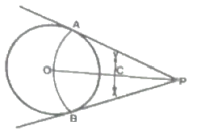
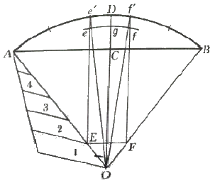
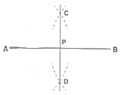
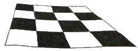
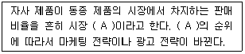

시각디자인기사 (2014-05-25 기출문제)
1과목: 시각디자인론
1. 제품판매를 위한 마케팅 믹스의 구성요소는?
- 가격, 제품, 유통경로, 촉진
- 가격, 제품, 촉진, 구매자
- 가격, 제품, 유통경로, 구매자
- 제품, 유통경로, 촉진, 구매자
(정답률: 42%)

2. 아이디어 발상의 창조적 기법 중 하나인 유추법(Synectics)과 관련이 없는 것은?
- 직접적 유추
- 의인적 유추
- 발전적 유추
- 상징적 유추
(정답률: 48%)
3. 다음 중 디자인 보호법상 성립요건에 해당되지 않는 것은?
- 시각성
- 형태성
- 기능성
- 심미성
(정답률: 35%)
4. 디자인의 발전을 위하여 기업차원에서 채택하여야 할 행동으로 적합하지 않는 것은?
- 경영자의 디자인에 대한 인식을 높일 필요가 있다.
- 기업 내의 독립된 디자인 매니저의 역할이 필요하다.
- 디자인의 경험이 없는 중소기업을 대상으로 전문디자이너를 만날 수 있는 지원제도가 필요하다.
- 기업 디자인 의식을 대표하는 기업 심벌마크를 외국의 스타일로 재구성한다.
(정답률: 80%)
5. 포스터모더니즘(post modernism)의 설명으로 옳은 것은?
- 19세기 후반에 일어난 디자인 사조이다.
- 물질적 가치 즉, 기능과 전통을 중요시 한다.
- 대중예술이라는 뜻으로 만화, 광고 등을 작품의 모체로 한다.
- 인간의 정서적, 유희적 본성을 중시한다.
(정답률: 25%)
6. 저작권법상 저작재산권의 보호기간은?
- 저작자의 생존하는 동안과 공표된 때부터 40년간
- 저작권의 생존하는 동안과 공표된 때부터 70년간
- 저작권의 생존하는 동안과 사망 후 40년간
- 저작권의 생존하는 동안과 사망 후 70년간
(정답률: 70%)
7. 실용신안법의 설명으로 틀린 것은?
- 실용신안등록출원서에는 반드시 도면이 첨부되어야 한다.
- 실용신안권의 존속기간은 실용신안등록출원일 후 10년이 되는 날까지로 한다.
- 5년간의 기간 내에서 존속기간을 연장할 수 있다.
- 비교적 기술진보 속도가 빠른 기술 분야에서 실용신안출원이 많다.
(정답률: 57%)
8. Green Marketing의 개념과 가장 거리가 먼 것은?
- Recycling
- Reuse
- Mass production
- Reduce
(정답률: 65%)
9. 다음 중 신문광고의 장점이 아닌 것은?
- 직업, 소득, 연령에 구애받지 않고 여러 독자층에 어필할 수 있으며 주목률이 높다.
- 다른 매체보다 회람률이 높기 때문에 광고매체로서 수명이 길다.
- 배포지역이 명확하여 지역별 광고나 반복광고에 적합하다.
- 신제품을 전국적으로 알리기에 효과가 높다.
(정답률: 38%)
10. 산업디자인에 개념에 가장 적합한 것은?
- 개인의 창작활동
- 개인의 취미에 다른 활동
- 아름다움에 대한 표현활동
- 물질문화 속에서 생활문제를 해결하는 창조활동
(정답률: 75%)
11. 산업디자인진흥법에 의거하여 상품의 외관, 기능, 재료, 경제성 등을 종합적으로 심사하여 디자인의 우수성이 인정된 상품에 부여하는 제도는?
- KS 마크
- G 마크
- IDEA 마크
- GD 마크
(정답률: 54%)
12. 우리나라가 갓, 모시, 돗자리, 가마 등을 가지고 최초로 참가한 국제박람회은?
- 런던박람회(1851년)
- 파리박람회(1889년)
- 콜롬비아박람회(1893년)
- 뉴욕박람회(1964년)
(정답률: 42%)
13. 기업 내에 축적되어 있는 무형자산으로 분류되지 않는 것은?
- 브랜드
- 기업이미지
- 디자인
- 생산시설
(정답률: 75%)
14. 검은 종이를 디자인한 형태로 오린 후, 검은 종이 뒤에 빛을 비추어서 절단된 틈으로 새어 나오는 빛을 한 컷 씩 촬영하여 만드는 애니메이션 기법은?
- 투광 애니메이션
- 셀 애니메이션
- 컴퓨터 애니메이션
- 컷 아웃 애니메이션
(정답률: 64%)
15. 광고매체로서 잡지광고의 특성이 아닌 것은?
- 고도의 인쇄기술인 활자 및 조판기술, 사진 인소기법의 도입을 발전하고 있다.
- 특정한 목표집단에 맞춰 수용자를 사회적, 심리적으로 차별화된 계층으로 둔다.
- 관심영역별, 연령별, 성별로 차별화된 독자층을 이룬다.
- 다양한 콘텐츠로 구성되므로 경제적이며 신문만큼 보급 범위가 넓다.
(정답률: 58%)
16. 디자인을 크게 세 영역으로 분류할 때, 이에 해당하지 않는 것은?
- 제품디자인
- 환경디자인
- 시각디자인
- 광고디자인
(정답률: 58%)
17. 아이디어 생성 기법 중, 그룹이 모여서 특별한 주제 또는 문제를 고찰하고 자유로운 연상을 통하여 생성된 아이디어를 구체화시키는 기법은?
- 리스팅(listing-system)
- 언어적 도해법(verbal diagramming)
- 브레인스토밍(brainstorming)
- 시네틱스(synectics)
(정답률: 70%)
18. 상품을 알리고 판매하기 위하여 판매현장에서 사용되는 독특한 형태의 광고로 판매현장에서 직접적인 충동구매를 유도하는 광고는?
- Pop Art Advertising
- Population Advertising
- Point of Purchase Advertising
- Position of Poster Advertising
(정답률: 55%)
19. 디자인에 대한 평가방법 중의미분별척도법(S.D법)에 관한 설명이 틀린 것은?
- 어떤 대상에 대한 태도를 측정하는데 주로 활용하고 소비자의 반응을 규명하는데 응용되고 있다.
- 개념의 의미를 규명하기 위하여 상호관계가 높은 여러쌍의 상반되는 의미의 형용사를 짝지은 척도를 사용한다.
- 목표간의 순위를 파악하여 상대적 중요도를 규명하면 대안적 해결안을 얻을 수 있다.
- 평가된 양식을 수집하여 의미공간내에서 각 개념별 위치파악이 가능하다.
(정답률: 22%)
20. 아이디어 시각화 과정 중 머릿속에 있는 아이디어를 시각화하는 첫번째 단계는?
- 시장조사
- 시안
- 콘셉트(concept)
- 섬네일 스케치(thumbnail sketch)
(정답률: 59%)
2과목: 조형심리학
21. 그림의 작도법은?

- 원주 밖의 1점에서 원에 접선 그리기
- 두 개의 직선에서 접하는 원 그리기
- 원의 중심구하기
- 원 주와 같은 길이의 직선 그리기
(정답률: 62%)
22. 점, 선, 면의 상관관계를 설명한 것을 옳은 것은?
- 두 개의 점이 접근하고 있을 때, 이 두 개의 점이 하나의 점으로 느껴진다.
- 점, 선, 면은 서로 독립된 것이므로 상관관계가 없다.
- 여러 개의 점들이 모여 그 외형이 어떠한 형태를 암시하고 있을 때 이것은 면으로 보인다.
- 점의 수가 많아 밀도가 높아지면 면의 느낌은 사라지고 확실하게 선으로 나타나게 된다..
(정답률: 75%)
23. 그림은 무엇을 하기 위한 작도인가?

- 원호의 접선
- 원호의 직연(直延)
- 주어진 3점을 지니는 원
- 원호의 n등분
(정답률: 58%)
24. 모양에 따른 선의 종류 중 길고 짧은 길이로 반복되게 그어진 선의 명칭은?
- 실선
- 은선
- 1점 쇄선
- 2점 쇄선
(정답률: 43%)
25. 다음 중 시지각의 항상성에 해당되지 않는 것은?
- 크기의 항상
- 무게의 항상
- 형의 항상
- 밝음의 항상
(정답률: 55%)
26. 18세기 독일 철학자로, <에스테티카(Aesthetica)>를 저술하고 학문으로서의 미학을 성립한 사람은?
- 바움가르텐
- 데카르트
- 플라톤
- 칸트
(정답률: 58%)
27. 다음 중 대비(contrast)에 대한 설명으로 틀린 것은?
- 서로 다른 부분의 조합에 의하여 생기는 것이다.
- 시각적 형태 강약에 의한 형의 감정 효과이다.
- 형태, 크기, 색채, 질감, 방향, 위치, 공간, 중량감의 대비 등이 있다.
- 숲속의 나무, 해변의 모래, 바다의 파도 등 자연속에서 그 예를 찾을 수 있다.
(정답률: 62%)
28. 신조형주의인 몬드리안 회화의 특징으로 틀린 것은?
- 화면을 정확하게 수직, 수평으로 분할하였다.
- 3원색과 무채색만을 이용하여 구성하였다.
- 인체나 풍경, 자연물을 묘사하는 데 사용되었다.
- 조형에 있어 가장 인공적인 특성을 압축하여 보여주고자 하였다.
(정답률: 78%)
29. 디자인의 요소에 해당 되지 않는 것은?
- Shape
- Color
- Texture
- Union
(정답률: 69%)
30. 게슈탈트의 그루핑 법칙과 관련한 형태지각에 관한 설명이 틀린 것은?
- 서로 가까이 있는 요소들은 하나로 뭉쳐져 보인다.
- 비슷한 성질을 가진 요소는 떨어져 있어도 덩어리져 보인다.
- 테두리 선으로 완전하게 연결되어야만 도형으로 인식된다.
- 비슷한 움직임을 지닌 것은 하나로 지각된다.
(정답률: 73%)
31. 수를 기초로 한 조화의 미로서, 조형예술의 창작원리로 활용되고 있는 것은?
- 통일
- 강조
- 비례
- 요소
(정답률: 69%)
32. 차이가 분명한 사물을 보편적인 사물보다 더 잘 기억하는 현상을 무엇이라 하는가?
- 위협의 감지
- 폰 레스토프 효과
- 기대 효과
- 상등분의 법칙
(정답률: 74%)
33. 그림과 같은 평면도법은?

- 직선의 n 등분
- 수직선 긋기
- 직선 끝에서의 수직선
- 직선의 2등분
(정답률: 53%)
34. 도형의 중심선 표시, 단면부분의 절단위치를 표시하는데 공통적으로 사용되는 선은?
- 파선
- 1점 쇄선
- 굵은 실선
- 가는 실선
(정답률: 58%)
35. 지각 공간을 분해하여 이미지를 여러 개를 나누는 법칙은?
- 프래그낸즈의 법칙
- 게슈탈트의 법칙
- 베르트하이머 법칙
- 코프카 법칙
(정답률: 25%)
36. 다음 중 점이 갖는 성질이 아닌 것은?
- 수열에 의한 대 → 소점의 무리는 강 → 약의 운동감을 느끼게 한다.
- 점이 먼 거리에 놓여 지면 힘은 분산되기 쉽다.
- 점은 근접, 유동, 연속의 요인에 따라 결합하기 어렵다.
- 대소 유사한 형으로 놓일 때, 동일한 크기로 보려고 하는 힘에 의해 깊이의 차로 지각되기 쉽다.
(정답률: 62%)
37. 아래 그림을 서로 다른 모양과 크기의 체크무늬로 이루어진 사다리꼴 그림으로 받아들이지 않고, 같은 크기의 정방형 체크무늬 타일바닥이 비스듬하게 기울어진 것으로 받아들이려는 경향이 있다. 이를 형태주의 심리학(Gestalt Psychology)에서는 무슨 원리로 설명하는가?

- 단순성의 원리
- 교차조합의 원리
- 모호성의 원리
- 전경배경의 원리
(정답률: 34%)
38. 디자인이나 조형의 창의적인 표현을 구체화하는 평면상의 최종 단계는?
- 디자인 제도
- 정밀 스케치
- 모형(prototype)
- 아이디어 스케치
(정답률: 32%)
39. 관찰자가 물체를 보고 그 형상을 판별할 수 있는 범위는?
- 지선
- 소점
- 기선
- 시야
(정답률: 70%)
40. 지각과 감각에 관한 설명 중 틀린 것은?
- 외계로부터 자극을 받아들이는 작용을 감각이라고 한다.
- 레이드(T. Reid)는 감각과 외계의 자극대상과의 관계까지 모두 포함한 광범위한 인지과정을 지각이라 했다.
- 감각은 비교적 단일한 자극 수용기의 작용만으로 결정되는 지각을 의미한다.
- 감각기는 특정의 자극에 대해서만 반응하는 특성을 지닌다.
(정답률: 12%)
3과목: 광고학
41. 기업목적과 관련된 프로덕트 콘셉트(product concept)란?
- "무엇을 만들까?"라는 제품화의 문제
- "어디에서 팔까?"라는 유통의 문제
- "무엇을 알릴까?"라는 메시지의 문제
- "무엇을 주장할까?"라는 상품화의 문제
(정답률: 15%)
42. 보기의 ( A )에 들어갈 적합한 용어는?

- 배분율
- 점유율
- 지배율
- 잠재율
(정답률: 70%)
43. 마케팅 관점에서 본 광고의 정의 중 가장 거리가 먼 것은?
- 유료형태(paid form)
- 대인판매(personal selling)
- 아이디어, 상품, 서비스(ideas, goods and service)
- 명시된 광고주(an identified sponsor)
(정답률: 14%)
44. 소비자 행동의 양극화에 대한 설명이 옳은 것은?
- 집중적인 구매 행위나 비구매 행위를 나타내는 양극화 소비자의 현상
- 지명도가 없는 상품은 품질이 높더라도 구매하지 않겠다는 소비자 형태
- 한편으로 고품질, 고가격을, 다른 한편으로는 저가품을 원하는 행동의 양극화 현상
- 환경제품이 애용을 주장하면서도 본인은 실천하지 않는 이중적 소비자 형태
(정답률: 53%)
45. 텔레비전 광고의 장점의 아닌 것은?
- 여러 소비자에게 도달 가능
- 시청 시간별 세분화 가능
- 창조성의 제약의 없음
- 높은 회전율
(정답률: 34%)
46. 커뮤니케이션 요소 중에서 송신자와 수신자를 연결해주는 매개체로서 광고의 경우 광고 메시지를 소비자에게 전달 주는 수단은?
- 송신자
- 기호화
- 노이즈
- 매체
(정답률: 79%)
47. 정보 접촉 지식 획득의 형태가 인간에 의해 보다 자연스러운 형태로 이루어지는 것을 목표로 대화형 또는 회화형 커뮤니케이션이 전개되는데 이런 형태의 쌍방향커뮤니케이션 용어를 지칭하는 단어는?
- 가상현실
- 다이나믹스
- 인터렉티브
- 하이비전
(정답률: 59%)
48. 다음 중 오피니언 리더(Opinion Leader)의 속성과 관계가 없는 것은?
- 많은 정규교육을 받았다.
- 사회, 경제적 지위가 높다.
- 상품을 채택하는데 혁신적이다.
- 감성적이다.
(정답률: 72%)
49. 그린 마케팅의 개념이 아닌 것은?
- 기업 활동의 기능과 목표를 환경적인 가치위에서 운영
- 소비자들의 단순한 욕구나 수요충족 지향적인 마케팅
- 인간과 자연의 상호 의존성에 초점을 맞춘 마케팅
- 공해 물질 배출량이 적거나, 폐기물을 재활용한 녹색상품개발
(정답률: 69%)
50. 광고목표의 요건에 해당되지 않는 것은?
- 객관적 측정이 가능할 것
- 목표달성기간의 명시
- 타깃 소비자에 대한 충분한 정의
- 광고예산 설정 및 세부집행계획
(정답률: 28%)
51. 다음 소비자들의 광고메시지 수용과정의 모형 중에서 행동적 태도를 보이는 단계는?
- 인지, 지식
- 지식, 호감
- 호감, 선호
- 확신, 구매
(정답률: 74%)
52. 구매 시점 광고로 소매점의 점두 또는 점내에서 행하는 광고는?
- 직접우송 광고
- 시네마 광고
- POP 광고
- 공중 광고
(정답률: 73%)
53. 다음 중 브랜드 포지셔닝 이론에 해당되지 않는 것은?
- 우리 브랜드의 가치기준을 높인다.
- 가치의 우선 순위를 바꾼다.
- 타 브랜드의 평가를 낮춘다.
- 타 브랜드와 혼동시킨다.
(정답률: 48%)
54. 광고주의 승인을 얻기 위해 정밀하게 그려진 구체적인 레이아웃은?
- 썸네일 스케치
- 러프 레이아웃
- 컴프리헨시브 레이아웃
- 이미지 레이아웃
(정답률: 24%)
55. 동생이 라면을 먹고 싶다고 했다. 누나가 동의했다. 아빠는 태양라면이 좋겠다고 말했다. 엄마가 사왔다. 그날 저녁은 온 가족이 라면으로 저녁식사를 했다. 이 때, 엄마의 역할은?
- 구매자, 소비자
- 영향력 행사자, 소비자
- 의사결정자, 소비자
- 제안자, 영향력 행사자
(정답률: 59%)
56. 개별조직의 차원이 아닌 사회, 경제적 차원에서 생산과 소비간의 재화 흐름이나 개별조직의 마케팅과 사회경제 시스템간의 상호 영향을 다루는 마케팅의 한 분야를 무엇이라고 하는가?
- 반응 마케팅
- 거시 마케팅
- 데이터베이스 마케팅
- 표준화 마케팅
(정답률: 46%)
57. 다음 중 '수면자 효과(sleeper effect)'에 대한 설명이 옳은 것은?
- 시간이 지난 후에 설득효과가 나타나는 광고효과
- 시간이 지난 후에 사용효과가 나타나는 광고효과
- 동시적으로 직접반응효과가 나타나는 광고효과
- 동시적으로 설득효과가 나타나는 판매효과
(정답률: 45%)
58. 다음 중 TV에서 사용되는 화면의 특수기법인 크로마키(chroma key)기법에서 배경으로 사용하는 색은?
- 흰색
- 붉은색
- 노란색
- 청색
(정답률: 69%)
59. 다음 중 옥외광고의 장점에 대한 설명이 옳은 것은?
- 광고제작이 용이하고, 초기투자비용이 저렴하다.
- 장시간 동일 메시지를 노출시킬 수 있다.
- 대형광고를 이용하면 자세한 정보를 담을 수 있다.
- 광고효과를 정확하게 측정할 수 있다.
(정답률: 69%)
60. 광고의 시너지 효과에 대한 설명이 틀린 것은?
- 상승효과의 증대
- 요소투입에 대한 산출효과의 증대
- 경쟁사 광고까지 도움을 주는 광고효과
- 투입요소의 연관성에서 발생되는 효과
(정답률: 78%)
4과목: 색채학
61. 안전색채 사용에 대한 설명이 틀린 것은?
- 제품안전 라벨에 안전색을 사용하여 주목성을 높인다.
- 초록은 지시의 의미를 가지며 의무실, 비상구, 대피소 등에 사용된다.
- 안전색채는 다른 물체의 색과 쉽게 식별되어야 한다.
- 노랑과 검정 대비색 조합 안전표지는 잠재적 위험을 경고하는 의미를 가진다.
(정답률: 35%)
62. 보색의 색광을 혼합한 결과는?
- 흰색
- 회색
- 검정
- 보라
(정답률: 34%)
63. 컬러 TV의 브라운관 형과면에는 적(Red), 녹(Green), 청(Blue)색들이 발광하는 미소한 형광 물체에 의하여 혼색된다. 이러한 혼색방법은?
- 동시감법 혼색
- 계시가법 혼색
- 병치가법 혼색
- 색료감법 혼색
(정답률: 70%)
64. 주택의 색채계획에 관한 설명 중 가장 타당한 것은?
- 거실은 즐거운 분위기를 주기 위해 고채도의 색을 사용한다.
- 부엌의 작업대는 지저분해지기 쉬우므로 저명도의 색을 사용한다.
- 욕실은 일반적으로 청결한 분위기를 위해 고명도의 색을 사용한다.
- 침실은 차분한 분위기를 주기 위해 저명도의 한색을 사용한다.
(정답률: 42%)
65. 색의 3속성 중 명도의 의미는?
- 색의 이름
- 색의 맑고 탁함의 정도
- 색의 밝고 어두움의 정도
- 색의 순도
(정답률: 82%)
66. 표면 지각이나 용적 지각이 없는 색으로 구름 한 점 없이 맑고 푸른 하늘을 볼 때의 느낌처럼 순수하게 색만이 보이는 상태를 말하는 것은?
- 면색
- 표면색
- 공간색
- 거울색
(정답률: 14%)
67. 다음 중 색료를 혼합하여 만들 수 없는 색은?
- 주황
- 노랑
- 연두
- 남색
(정답률: 58%)
68. 다음 중 '박하색' 과 관련이 없는 이름이나 기호는 무엇인가?
- Mint
- 2.5PB 9/2
- 흰 파랑
- Indigo blue
(정답률: 56%)
69. 디지털 색채체계의 유형 중 설명이 틀린 것은?
- HSB : 색의 3가지 기본 특성인 색상, 채도, 명도에 의해 표현하는 방식이다.
- RGB : 컴퓨터 모니터와 스키린 같은 빛의 원리로 컬러를 구현하는 장치에서 사용된다.
- CMYK : 표현할 수 있는 컬러 범위는 RGB 형식보다 넓다.
- L*a*b* : CIE가 1976년에 추천하여 지각적으로 거의 균등한 간격을 가진 색공간에 의한 색상모형이다.
(정답률: 54%)
70. 색을 띤 그림자라는 의미로 주변색의 보색이 중심에 있는 색에 겹쳐져 보이는 현상은?
- 색음현상
- 메타메리즘
- 애브니효과
- 메카로효과
(정답률: 50%)
71. 이웃한 색이 서로 인접한 부근에서 더 강한 대비가 느껴지는 현상은?
- 푸르킨예 현상
- 연변대비
- 계시대비
- 한난대비
(정답률: 73%)
72. 복잡한 가운데 질서의 요소를 미(美)의 기준으로 보고, 색의 3속성을 고려한 독자적인 색공간을 가정하여 조화관계를 주장한 사람은?
- Ostwald
- Munsell
- Moon Spencer
- Birren
(정답률: 24%)
73. 다음 중 동일색상의 배색은?
- 주황 – 갈색
- 주황 - 빨강
- 노랑 – 연두
- 노랑 – 검정
(정답률: 36%)
74. 오스트발트 색채 조화의 설명으로 틀린 것은?
- 유사색 가운데 색상 간격이 2~4인 2색의 배색은 약한 대비의 조화가 된다.
- 순도가 같은 계열의 색은 조화된다.
- 흰색량이 같은 색은 조화된다.
- 색상환의 중심에 대하여 반대 위치에 있는 2색의 배색을 이색조화라고 한다.
(정답률: 39%)
75. 7YR에 대한 설명으로 옳은 것은?
- Y 와 R 의 중간 색상으로 R에 더 가깝다.
- Y 와 R 의 같은 비율로 혼합되어 있다.
- Y 와 R 의 중간 색상으로 Y에 더 가깝다.
- 직관적 표기법으로 알 수가 없다.
(정답률: 73%)
76. 태양 빛과 형광등에서 다르게 보이는 물체색이 시간이 지나면 같은 색으로 느껴지는 현상은?
- 연색성
- 색순응
- 박명시
- 푸르킨예 현상
(정답률: 43%)
77. 잔상에 대한 설명 중 옳은 것은?
- 잔상은 색의 대비와는 전혀 관계없이 일어난다.
- 수술실 벽면을 청록색으로 칠하는 것은 잔상을 막기 위해서이다.
- 자극이 끝난 후에도 보고 있던 상을 그대로 계속하여 볼 수 있는 경우는 음성적 잔상에 속한다.
- 계시대비는 잔상의 영향을 받지 않는다.
(정답률: 47%)
78. 다음 색채배색 중 신맛의 느낌을 수반하는 배색은?
- 노랑, 연두
- 빨강, 주황
- 파랑, 갈색
- 초록, 회색
(정답률: 69%)
79. 다음 중 색조를 표현한 것은?
- Red
- Vivid
- Blue
- Red Purple
(정답률: 72%)
80. 다음 중 추상체와 간상체에 대한 설명이 틀린 것은?
- 유사색 가운데 색상 간격이 2 ~ 4인 2색의 배색은 약한 대비의 조화가 된다.
- 망막의 중심부에는 간상체가, 주변 망막에는 추상체가 분포되어 있다.
- 간상체는 추상체에 비해 해상도가 떨어지지만 빛에는 더 민감하다.
- 추상체는 장파장에, 간상체는 단파장에 민감하다.
(정답률: 8%)
5과목: 사진 및 인쇄제판론
81. 종이제조 공정에서 펄프에 적당한 기계적 처리를 하여 부풀리는 공정은?
- 고해 (Beating)
- 사이징 (Sizing)
- 충진 (Loading)
- 착색 (Coloring)
(정답률: 39%)
82. 4×5" 뷰 카메라(View Camera)로 촬영을 할 때 수직면의 왜곡을 보정하기 위한 Movement는?
- Rise
- Fall
- Tilt
- Swing
(정답률: 65%)
83. 초점거리가 50mm이고, 렌즈의 밝기가 1:2인 렌즈의 유효 구경은 얼마인가?
- 12.5mm
- 가 25mm
- 50mm
- 100mm
(정답률: 53%)
84. 녹색(G) 필터가 주로 흡수하는 색은?
- Yellow
- Magenta
- Cyan
- Black
(정답률: 50%)
85. 현상 처리과정에서 유제 중에 흑화가 가능한 미노광은염을 약품을 사용하여 제거시키는 과정은?
- 현상
- 정지
- 정착
- 수세
(정답률: 38%)
86. 이상적인 노란색에 가까운 반사 물체에 백색광을 조사했을 때 어떤 광원이 흡수되는가?
- B광
- G광
- R광
- M광
(정답률: 61%)
87. 교정인쇄를 한 경우와 본인쇄를 한 경우에 인쇄물 농도차가 생기는 원인이라고 볼 수 없는 것은?
- 인쇄 장소
- 인쇄기 구조
- 인쇄 속도
- 인쇄 방식
(정답률: 72%)
88. 주광용(day light type) 필름으로 촬영할 때 적합하지 않은 조명 광원은?
- 전자 플래시
- 청색 사진전구
- 인쇄 속도
- 태양광
(정답률: 60%)
89. 가이드넘버(Guide Number)가 40인 스트로보를 동조시켜 5m거리에 있는 피사체를 촬영할 경우 알맞은 F-Number는? (단, 가이드넘버(Guide Number)는 미터기준으로 산정)
- F/5.6
- F/8
- F/11
- F/16
(정답률: 73%)
90. 현상 주약인 메톨의 성질이 아닌 것은?
- 연조 현상의 주약이다.
- 현상액의 온도와 억제제의 영향을 적게 받는다.
- 상이 나타날 때까지 걸리는 시간이 빠르다.
- 화상 출현과 흑화 진행이 느리다.
(정답률: 40%)
91. 표지를 속장보다 조금 크게 만들어약간 튀어나오게 하며 사전류에 많이 사용되는 제책 방식은?
- 양장 제책
- 반양장 제책
- 호부장 제책
- 중철 제책
(정답률: 75%)
92. 35mm SLR카메라로 촬영할 때 설정한 조리개의 피사계심도를 촬영 전 파인더로 확인할 수 있는 장치는?
- AE-로크
- AF-로크
- 프리셋 링 (preset ring)
- 프리뷰(pre-view) 버튼
(정답률: 71%)
93. 빛(Light)을 벽이나 천장 등에 비춰서 그 반사광으로 피사체를 조명하는 간접광은?
- 디퓨즈 라이트
- 바운스 라이트
- 스포트라이트
- 다이렉트 라이트
(정답률: 50%)
94. 적당한 입체감이 있고 자연스러운 느낌을 주는 광은?
- 측광
- 사광
- 반역광
- 정면광
(정답률: 40%)
95. 면적이 같고 깊이를 다르게 하여 잉크가 묻는 양을 변화시켜 주는 그라비어 제판법은?
- 컨벤셔널 그라비어
- 망점 그라비어
- 던젤 그라비어
- 하드도트 그라비어
(정답률: 60%)
96. 인쇄판에 사용되는 활자 합금의 재료가 아닌 것은?
- 납(Pb)
- 안티몬(Sb)
- 아연(Zn)
- 주석(Sn)
(정답률: 25%)
97. 필름 한 롤에 촬영된 모든 이미지들을 인화지에 필름과 같은 크기로 인화하여 무엇을 촬영했는지 한 번에 관찰하기 위한 인화 방법은?
- 확대인화
- 트리밍
- 밀착인화
- 크로핑
(정답률: 48%)
98. 다음 중 신속정착제로 사용되는 약품은?
- 티오황산나트륨
- 티오황산암모늄
- 시안화칼륨
- 황청산알루미늄
(정답률: 20%)
99. 현상도중 반전 처리를 하여 피사체의 명암과 색상이 똑같이 필름상에 만들어지며 일반적으로 인쇄 원고용으로 사용하거나 필름을 직접 슬라이드로 감상하기 위한 용도로 사용되는 필름은?
- 컬러리버설 필름
- 인터네거티브 필름
- 컬러네거티브 필름
- 리스 필름
(정답률: 32%)
100. 광고사진의 제품 촬영에서 대형카메라의 무브먼트를 이용한 효과가 아닌 것은?
- 수직선과 수평선을 보정해 줄 수 있다.
- 원근에 의한 피사체 왜곡을 수정할 수 있다.
- 제품이 형태를 변형시킬 수 있다.
- 해상력을 더욱 높게 할 수 있다.
(정답률: 30%)